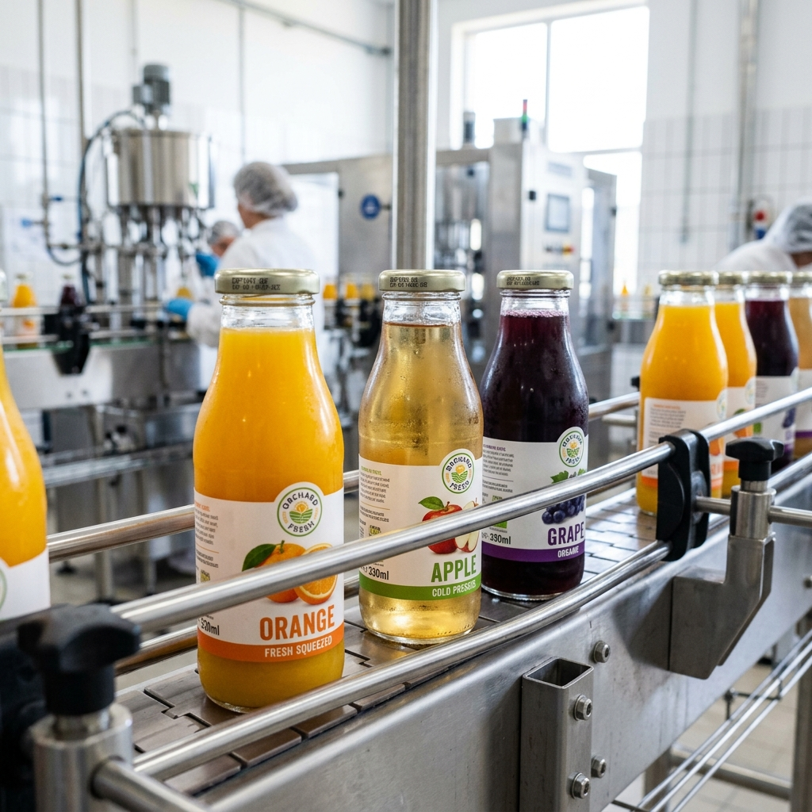
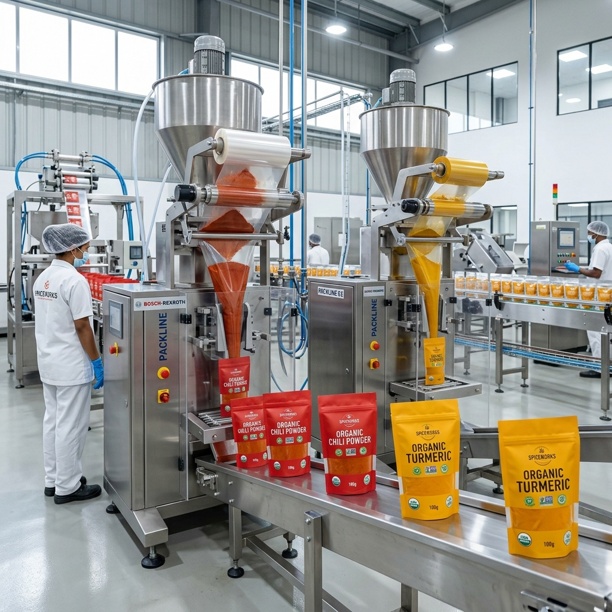
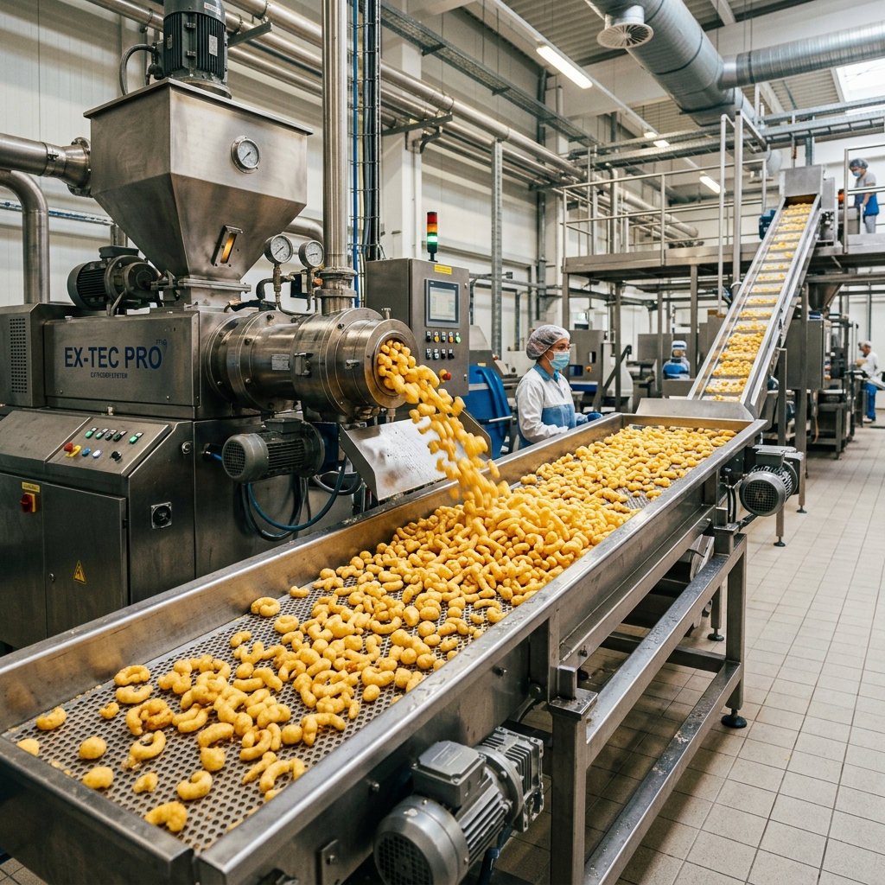
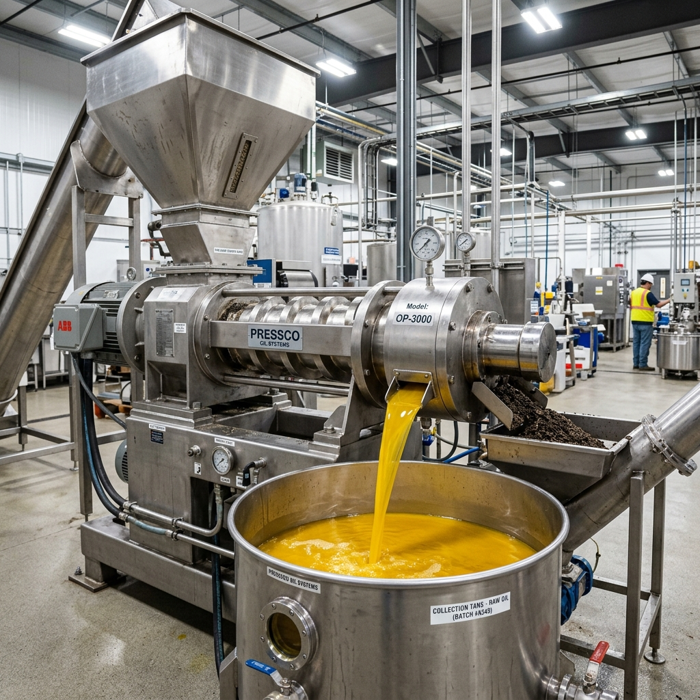
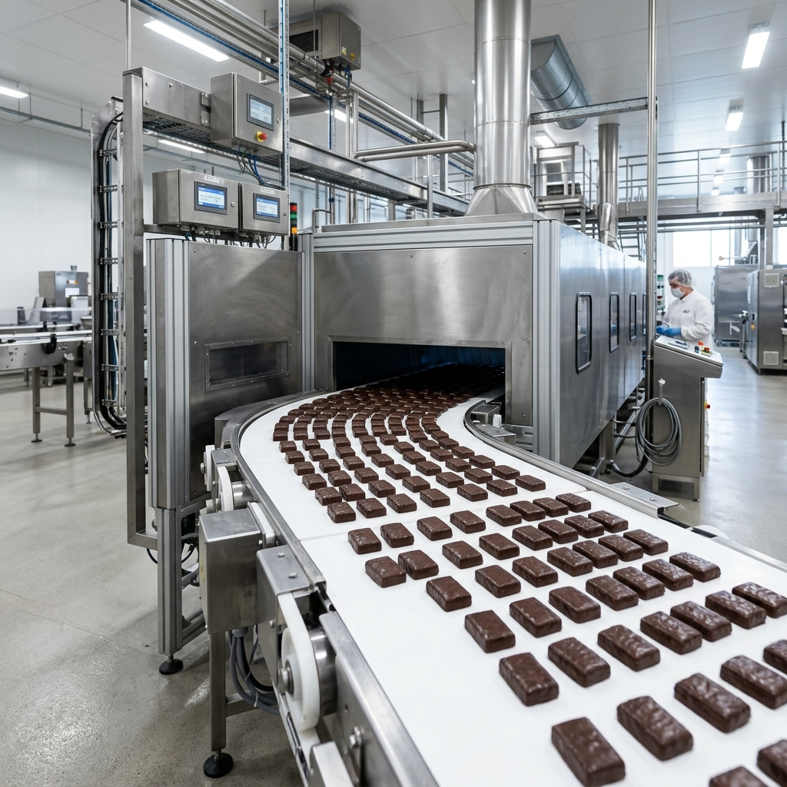
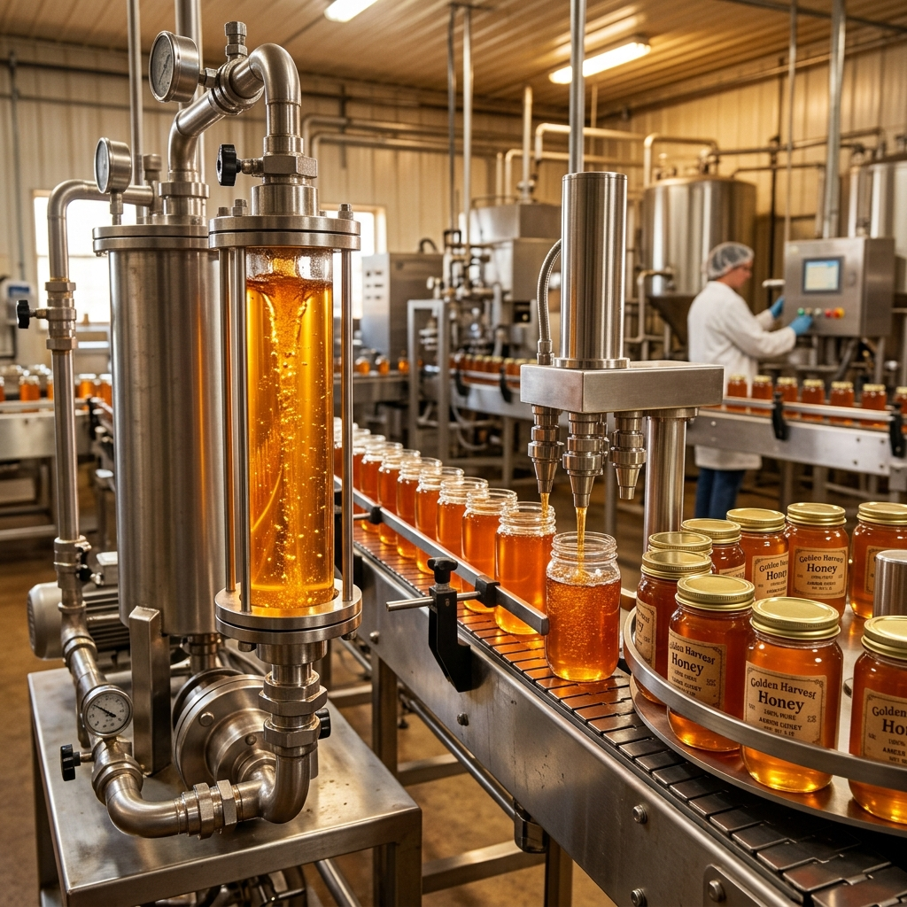

Real Projects. Measured Results.
See how Hike partners with food & beverage companies to solve tough formulation errors, engineer highly efficient plant designs, and launch profitable brands.

Optimizing a High-Speed Fruit Juice Plant in Gujarat
The Challenge
An established beverage manufacturer faced high product spoilage and frequent line stoppage on their hot-fill bottling machinery due to thermal shock and unstable chemical formulation.
Hike's Intervention
Our plant engineers re-mapped the piping and clean-in-place (CIP) configuration. Simultaneously, our food scientists standardized the acidulant-stabilizer balance to optimize processing stability.
The Business Result
Downtime was cut by 80%, chemical stabilizers were optimized saving 12% in raw materials cost, and production volume rose by 35% in the first quarter.

Cold-Grinding Spice Processing Facility in Rajasthan
The Challenge
An organic spice exporter was losing valuable volatile oils and color pigments during high-temperature mechanical grinding, resulting in lower export grades.
Hike's Intervention
Hike engineered a state-of-the-art cold-grinding (cryogenic grinding) assembly line layout and developed vacuum-tight barrier packaging materials to seal in natural aromas.
The Business Result
Aromatics retention went up by 95%, grading standards met premium EU export criteria, and manufacturing efficiency increased output capacity by 2.5x.

Launching a Gluten-Free Extruded Snacks Brand
The Challenge
A snacks startup wanted to develop a healthy multigrain puffed snack with zero artificial colors, stable texture, and a 9-month shelf life without getting soggy.
Hike's Intervention
We formulated an optimized corn-quinoa-lentil flour matrix and conducted shelf-life audits. We then partnered the brand with a co-packer in our contract manufacturing network.
The Business Result
Created a highly nutritious product that maintained crispness for 10 months. Secured listing in 3 regional retail chains with a 100% initial buy-in rate from distributors.

Greenfield Edible Oil Extraction Plant in Vadodara
The Challenge
An agricultural enterprise in Vadodara experienced low yield rates during seed mechanical pressing and unsustainably high electrical consumption under full load.
Hike's Intervention
We re-engineered seed pre-conditioning heating steps, optimized high-pressure expeller parameters, and integrated a waste heat recovery loop in the extraction section.
The Business Result
Achieved an extra 4% oil extraction yield, cut energy bills by 18%, and elevated plant processing capability to a 40% higher overall capacity.

Automated Protein Bar Production & Enrobing in Surat
The Challenge
A sports nutrition startup faced manufacturing stoppages from raw bar hardening on cold-extrusion dies and packaging deformation inside cooling tunnels.
Hike's Intervention
We developed a custom formulation using humectants and specialized binder syrups. We also recalibrated line temperatures and automated the cutting-enrobing conveyor belt.
The Business Result
Maintained a soft and chewable bar texture over a 12-month shelf life. Automated workflows eliminated extrusion blockages and scaled bar output by 50%.

Honey Filtration & Moisture Reduction in Rajkot
The Challenge
A regional honey cooperative struggled to lower moisture levels below the 20% fermentation limit without overheating, which destroyed healthy natural enzymes.
Hike's Intervention
Hike integrated low-temperature vacuum evaporators and high-precision micro-filters to eliminate wild yeast while fully protecting native heat-sensitive enzymes.
The Business Result
Moisture levels successfully dropped under 18%. The processed batches passed strict European purity audits, unlocking premium international B2B export avenues.